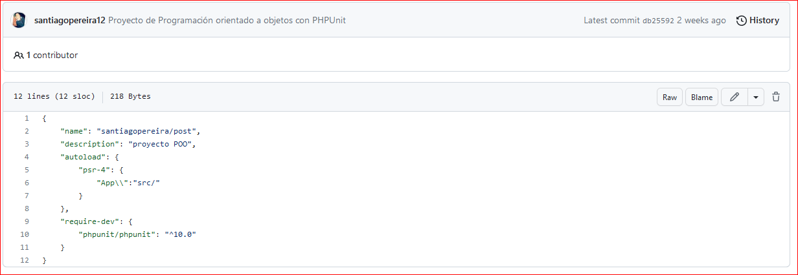
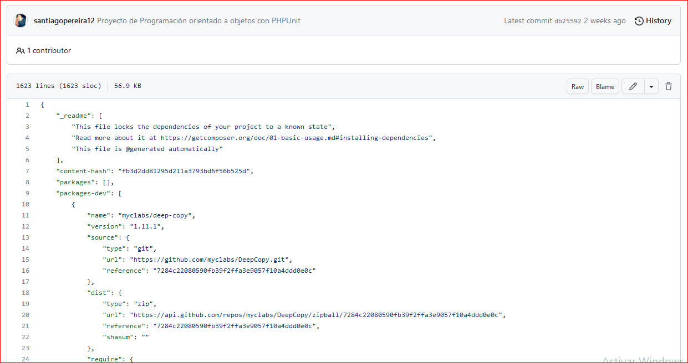
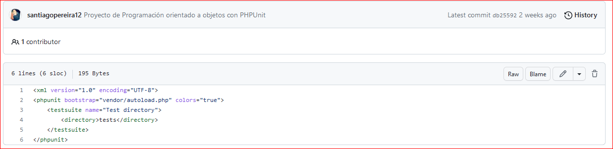

Definición de Archivos
Created by Santiago Pereira
Archivo Plano
Los archivos planos son una colección de información que está almacenada y es accedida de forma organizada en una base de datos. Se suele usar para almacenar información en una forma no estructurada. Continuar con la definición.
Archivos tipo XML
El lenguaje de marcado extensible (XML) permite definir y almacenar datos de forma compartible.
continuar definiciónImportancia de XML
El lenguaje de marcado extensible (XML) es un lenguaje de marcado que proporciona reglas para definir cualquier dato. A diferencia de otros lenguajes de programación, XML no puede realizar operaciones de computación por sí mismo. En cambio, se puede implementar cualquier software o lenguaje de programación para la administración estructurada de datos.
continuar lectura.Beneficios de usar XML
- Respaldo para las transacciones interempresariales
- Conservación de la integridad de los datos
- Mejora de la eficiencia de búsqueda
- Diseño de aplicaciones flexibles
JSON
se utiliza para estructurar datos en forma de texto y permite el intercambio de información entre aplicaciones de manera sencilla, liviana y rápida. Definición JSON
Hidden Slides
This slide is visible in the source, but hidden when the presentation is viewed. You can show all hidden slides by setting the `showHiddenSlides` config option to `true`.
Code JSON
import React, { useState } from 'react';
function Example() {
const [count, setCount] = useState(0);
return (
...
);
}
Codigo JSON
Code JSON XML en Php
Codigo JSON y XML en PHP con vendor_composer
  Archivos Parquet
Es un tipo de fichero que contiene datos (de tipo tabla) en su interior, de forma similar a cuando hablamos del fichero tipo CSV.
importancia de usar archivos parquet.